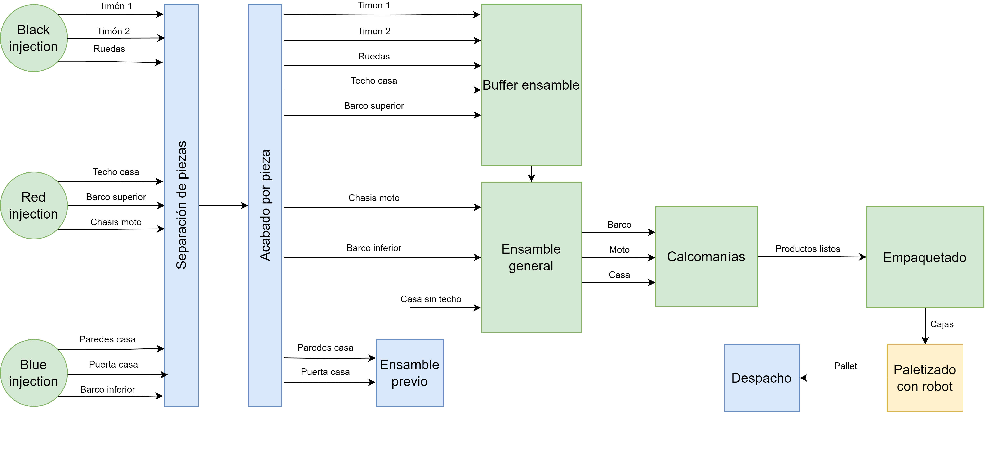
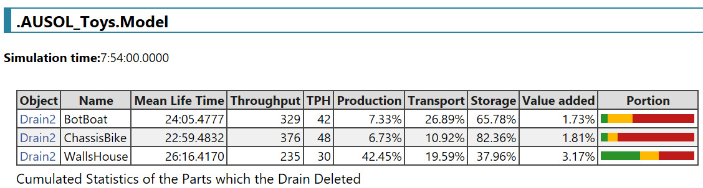
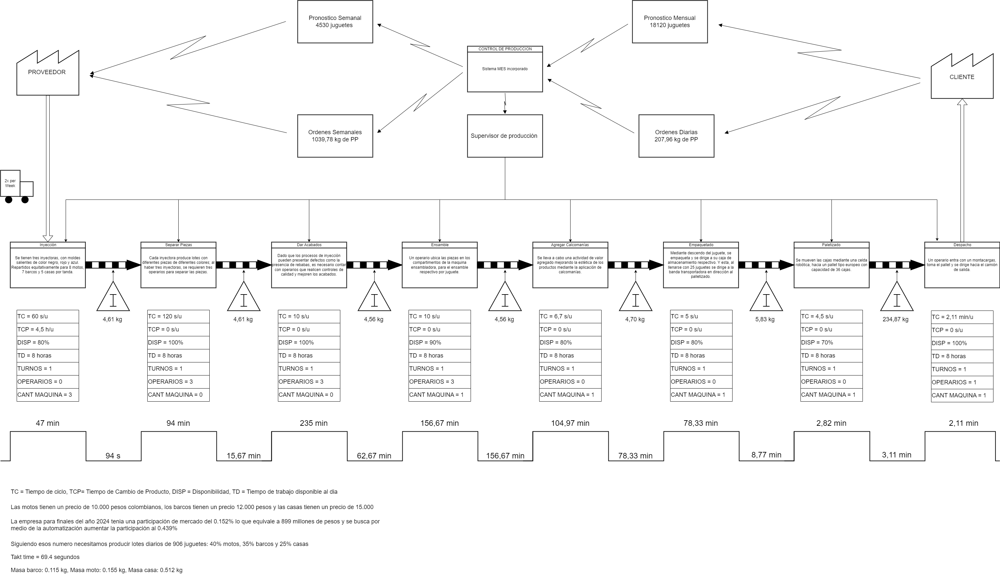

Diseño de planta
Para el diseño de planta se tiene el siguiente diagrama de flujos de material. Donde se evidencia la presencia de nueve etapas.
Tecnomatix
Los resultado en Tecnomatix plant simulation del diseño de planta, para abarcar el 0,44% del mercado colombiano en cuota diaria, son los siguientes.
VSM
Bajo los supuestos del proyecto y la propuesta económica se tiene el siguiente Value Stream Mapping (VSM).
